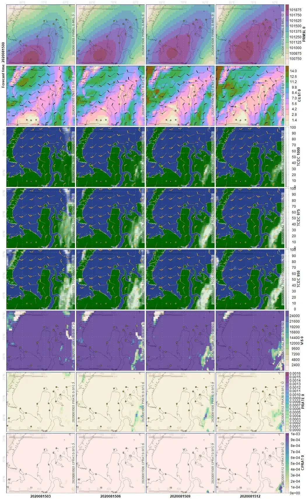

layout: true .banner[ .remarkonly[ <img src="assets/sevin.jpg" width="71" /> <img src="assets/sevin-expedition.png" width="82" /> <img src="assets/pbu-logo.jpg" width="78" /> ] .shorttitle[ ] ] --- class: metadata customtitle middle left name: H3216 <iframe width='220' height='220' class='timenow' src='https://www.timeanddate.com/worldclock/fullscreen.html?n=1440' frameborder='0' allow='encrypted-media' allowfullscreen></iframe> .sidebar.left-column[ # [Наши исследования](#H6abe) # [Полевые работы](#Hb480) # [Коллаборация](#H5a5f) ] .mainbar.right-column[ .author[Никита Платонов] .institute[Институт проблем экологии и эволюции им. А. Н. Северцова Российской академии наук] .title[Информационное обеспечение исследований белого медведя] .subtitle[Разработки и их применение в 2021-2023 гг.] .what[VI<sup>ая</sup> научно-практическая конференция «Вселенная белого медведя», 15-16 марта 2023 г.] .where[Анадырь, Чукотский АО] .when[2023-03-16 .updated[Обновлено: 2023-03-12 14:01]] ] --- class: scrollable name: H6abe .sidebar.left-column[ # [Наши исследования](#H6abe).fg[].bg[] # [Полевые работы](#Hb480) # [Коллаборация](#H5a5f) ] .mainbar.right-column[ ## «Программа изучения белого медведя в Российской Артике» Цель: комплексное изучение белого медведя как вида .font70[ + Изучение пространственно-временного размещения животных в зависимости от факторов окружающей среды. + Оценка перемещений белого медведя и характера использования им местообитаний. + Изучение репродуктивной биологии белого медведя. + Изучение половозрастной структуры и демографических показателей популяций. + Изучение питания, кормовых ресурсов, распределения и динамики основных видов жертв белого медведя. + Изучение взаимоотношений белого медведя с другими видами животных и человеком. + Изучение роли природных и антропогенных факторов в динамике численности с особым вниманием к последствиям воздействия на популяции загрязняющих веществ, патогенных организмов и изменения климата. + Уточнение популяционной структуры географических популяций белого медведя с применением молекулярно-генетического и других современных методов анализа. + Изучение сезонной и межгодовой динамики ледовых местообитаний ] ] --- name: Hb480 .sidebar.left-column[ # [Наши исследования](#H6abe) # [Полевые работы](#Hb480).fg[].bg[] ## [Целостность припая](#H1231) ## [Планирование авиаучетов](#H167c) # [Коллаборация](#H5a5f) ] .mainbar.right-column[ .font95[ Проблема: + Ограничения объема и скорости передачи данных, нередки обрывы + Необходимость получения данных в реальном времени Применяемые решения: + Получение и обработке данных «хостом» (сервер или человек), на выходе сводка и легковесные картинки. + Скрипты для автоматического получения данных ночью или во время «выезда в поле» + Использование API вместо интерактивных запросов в браузере + Спутниковая биотелеметрия Argos (SOAP) – стандартизация разделителей и формата данных + Картографические интернет сервисы TMS и WMS – разрешение данных по размеру экрана + «Помощь друга» – голосовая спутниковая связь ] ] --- name: H1231 .sidebar.left-column[ # [Наши исследования](#H6abe) # [Полевые работы](#Hb480).fg[] ## [Целостность припая](#H1231) <span class="bullet bullet-active">[•](#H1231)</span><span class="bullet mslide7m">[•](#H427c)</span>.fg[].bg[] ## [Планирование авиаучетов](#H167c) # [Коллаборация](#H5a5f) ] .mainbar.right-column[ Радиолокационные изображения Sentinel-1 <div class="figure" style="text-align: center"> <img src="assets/S1B_EW_GRDM_1SDH_20210419T042651_20210419T042751_026531_032B0C_C096-ql.jpg" alt="Исходный размер изображения около 200 МБ" width="1330" height="568" /> <p class="caption centered">Исходный размер изображения около 200 МБ</p> </div> ] --- name: H427c .sidebar.left-column[ # [Наши исследования](#H6abe) # [Полевые работы](#Hb480).fg[] ## [Целостность припая](#H1231) <span class="bullet bullet">[•](#H1231)</span><span class="bullet bullet-active">[•](#H427c)</span>.fg[].bg[] ## [Планирование авиаучетов](#H167c) # [Коллаборация](#H5a5f) ] .mainbar.right-column[ Визуальная оценка разрушения ледового покрова <div class="figure" style="text-align: center"> <img src="assets/hv-20210419-0426.png" alt="Необходимый для работы фрагмент около 200 КБ" width="1330" height="568" /> <p class="caption centered">Необходимый для работы фрагмент около 200 КБ</p> </div> ] --- name: H167c .sidebar.left-column[ # [Наши исследования](#H6abe) # [Полевые работы](#Hb480).fg[] ## [Целостность припая](#H1231) ## [Планирование авиаучетов](#H167c).fg[].bg[] # [Коллаборация](#H5a5f) ] .mainbar.right-column[ .scrollable[ Данные GFS по атмосферной циркуляции: давление на уровне моря, фракция обласности и ветер по уровням геопотенциальных высот, горизонтальная видимость, осадки *и др.*  ] ] --- name: H5a5f .sidebar.left-column[ # [Наши исследования](#H6abe) # [Полевые работы](#Hb480) # [Коллаборация](#H5a5f).fg[].bg[] ## [Обмен данными](#H4618) ## [Обмен результатами](#H5eb9) ] .mainbar.right-column[ ## Воспроизводимые исследования + Программный код + преобразует необработанные данные в обработанные данные + выполняет анализ данных + включает результаты анализа в отчет Реализация: язык программирования R, внедренный в язык текстовой разметки markdown (Rmarkdown), преобразуется утилитой pandoc в документы различных форматов. Популяризация: веб-приложения (например, Shiny) + Не нужно устанавливать программное обеспечение (ГИС, IDE) + Графическая оболочка скрывает программирование ] --- name: H4618 .sidebar.left-column[ # [Наши исследования](#H6abe) # [Полевые работы](#Hb480) # [Коллаборация](#H5a5f).fg[] ## [Обмен данными](#H4618).fg[].bg[] ## [Обмен результатами](#H5eb9) ] .mainbar.right-column[ Универсальные форматы данные + растровые ГИС данные: GeoTIFF (~~ArcGIS формат~~) + векторные ГИС данные: ESRI Shapefile (~~ArcGIS формат~~) + таблицы: CSV (~~Excel таблицы с раскрашиванием текста и ячеек~~) + для треков, маршрутов и находок GPX (~~не во внутреннем формате прибора~~) ] --- name: H5eb9 .sidebar.left-column[ # [Наши исследования](#H6abe) # [Полевые работы](#Hb480) # [Коллаборация](#H5a5f).fg[] ## [Обмен данными](#H4618) ## [Обмен результатами](#H5eb9).fg[] ### [Спутниковая биотелеметрия](#H5eb9) <span class="bullet bullet-active">[•](#H5eb9)</span><span class="bullet mslide14m">[•](#Hceee)</span>.fg[].bg[] ### [Анализ перемещений](#H8dfd) ### [Просмотр MODIS](#H154b) ] .mainbar.right-column[ <img src="assets/argos.png" width="1330" height="568" image style="display: block; margin: auto;" /> ] --- name: Hceee .sidebar.left-column[ # [Наши исследования](#H6abe) # [Полевые работы](#Hb480) # [Коллаборация](#H5a5f).fg[] ## [Обмен данными](#H4618) ## [Обмен результатами](#H5eb9).fg[] ### [Спутниковая биотелеметрия](#H5eb9) <span class="bullet bullet">[•](#H5eb9)</span><span class="bullet bullet-active">[•](#Hceee)</span>.fg[].bg[] ### [Анализ перемещений](#H8dfd) ### [Просмотр MODIS](#H154b) ] .mainbar.right-column[ <iframe src="https://nplatonov.shinyapps.io/argos?branch=somov" width="1330" height="620px" data-external="1" freeze></iframe> ] --- name: H8dfd .sidebar.left-column[ # [Наши исследования](#H6abe) # [Полевые работы](#Hb480) # [Коллаборация](#H5a5f).fg[] ## [Обмен данными](#H4618) ## [Обмен результатами](#H5eb9).fg[] ### [Спутниковая биотелеметрия](#H5eb9) ### [Анализ перемещений](#H8dfd) <span class="bullet bullet-active">[•](#H8dfd)</span><span class="bullet mslide16m">[•](#H20e0)</span>.fg[].bg[] ### [Просмотр MODIS](#H154b) ] .mainbar.right-column[ <img src="assets/openday.png" width="1330" height="568" image style="display: block; margin: auto;" /> ] --- name: H20e0 .sidebar.left-column[ # [Наши исследования](#H6abe) # [Полевые работы](#Hb480) # [Коллаборация](#H5a5f).fg[] ## [Обмен данными](#H4618) ## [Обмен результатами](#H5eb9).fg[] ### [Спутниковая биотелеметрия](#H5eb9) ### [Анализ перемещений](#H8dfd) <span class="bullet bullet">[•](#H8dfd)</span><span class="bullet bullet-active">[•](#H20e0)</span>.fg[].bg[] ### [Просмотр MODIS](#H154b) ] .mainbar.right-column[ <iframe src="https://nplatonov.shinyapps.io/openday/" width="1330" height="380px" data-external="1" magnify></iframe> ] --- name: H154b .sidebar.left-column[ # [Наши исследования](#H6abe) # [Полевые работы](#Hb480) # [Коллаборация](#H5a5f).fg[] ## [Обмен данными](#H4618) ## [Обмен результатами](#H5eb9).fg[] ### [Спутниковая биотелеметрия](#H5eb9) ### [Анализ перемещений](#H8dfd) ### [Просмотр MODIS](#H154b) <span class="bullet bullet-active">[•](#H154b)</span><span class="bullet mslide18m">[•](#Hc758)</span>.fg[].bg[] ] .mainbar.right-column[ <img src="assets/modis.png" width="1330" height="568" image style="display: block; margin: auto;" /> ] --- name: Hc758 .sidebar.left-column[ # [Наши исследования](#H6abe) # [Полевые работы](#Hb480) # [Коллаборация](#H5a5f).fg[] ## [Обмен данными](#H4618) ## [Обмен результатами](#H5eb9).fg[] ### [Спутниковая биотелеметрия](#H5eb9) ### [Анализ перемещений](#H8dfd) ### [Просмотр MODIS](#H154b) <span class="bullet bullet">[•](#H154b)</span><span class="bullet bullet-active">[•](#Hc758)</span>.fg[].bg[] ] .mainbar.right-column[ <iframe src="https://nplatonov.shinyapps.io/modis?lon=180.5&lat=71.2&zoom=7&date=2022-09-08" width="1330" height="620px" data-external="1"></iframe> ] --- name: josh background-image: url("https://i0.wp.com/polarbearscience.com/wp-content/uploads/2019/07/polar_bear_summer_2-final-2.jpg") background-size: cover class: additional no-title break .footer.remarkonly[ Возможно, нарушены права на эту картинку. [Отсюда](https://polarbearscience.com/2019/07/12/10-fallacies-about-arctic-sea-ice-polar-bear-survival-teachers-parents-take-note/) ] --- name: He2ae .sidebar.left-column[ # [Наши исследования](#H6abe) # [Полевые работы](#Hb480) # [Коллаборация](#H5a5f) ] .mainbar.right-column[ .font95[ ## Благодарности + Участники Постоянно действующей экспедиции РАН + «Программа изучения белого медведя в Российской Арктике»: Вячеслав Рожнов (руководитель), Илья Мордвинцев (зам.рук.), Евгений Иванов, Сергей Найденко + Программы «Белуха», «Тюлени закрытых водоемов» + Соучастники, соорганизаторы + НП «Русская Арктика» + НП «Ленские Столбы», ИБПК СО РАН + Российский центр освоения Арктики + Поддержка + НК «Чукотский арктический научный центр» + Русское географическое общество + ООО «Арктический Научный Центр» -- научный институт ПАО «НК «Роснефть» ] <style type="text/css"> :root { --sidebar-pointsize: 63%; } </style> ]